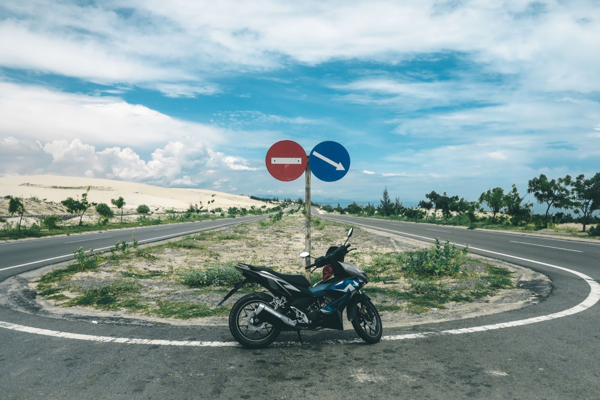

실전
베트남에서 오토바이 탈 때 휴대폰과 내비게이션

낯선 도시에서 내비게이션은 큰 도움이 되지만, 휴대폰이 흐름에서 시선을 빼앗으면 안 됩니다. 경로는 출발 전에 준비하고, 변경은 안전한 곳에 완전히 멈춘 뒤에만 하세요.
경로를 미리 설정
- 장소 이름만이 아니라 목적지와 지역을 확인하세요;
- 처음 두세 번의 회전을 보세요;
- 신호가 약할 때를 대비해 오프라인 지도를 받으세요;
- 불필요한 알림을 끄세요;
- 음성 안내 볼륨을 충분히 높이세요.

거치대는 어때야 하나
휴대폰은 최소 네 곳에서 고정되어야 하고 계기판, 미러, 핸들 회전을 가리면 안 됩니다. 설치 후 핸들을 양쪽 끝까지 돌려 거치대가 닿는 곳이 없는지 확인하세요. 안전끈 없는 싸구려 집게는 구덩이에서 열릴 수 있습니다.
케이스나 안전 고리는 유용하지만 휴대폰 냉각을 방해하면 안 됩니다. 직사광선 아래, 특히 충전 중에는 기기가 빨리 과열됩니다.
비와 충전
방수 휴대폰이라도 폭우 전에는 밀봉 케이스에 넣는 게 좋습니다. 충전 단자는 특히 물에 약합니다. 케이블은 레버에 걸리거나 핸들을 돌릴 때 당겨지지 않게 고정하세요.
주행 중 하면 안 되는 것
주소를 입력하거나, 메시지에 답하거나, 휴대폰을 손에 들지 마세요. 회전을 놓쳤다면 차분히 계속 가고 내비게이션이 경로를 다시 잡게 하세요. 흐름을 가로지르는 급한 동작이 몇 분 더 걸리는 것보다 위험합니다.
주차할 때의 휴대폰
오토바이에서 떠나기 전에 휴대폰과, 쉽게 빠진다면 거치대 분리 부품도 챙기세요. 햇볕 아래 시트 밑에 기기를 두지 마세요: 닫힌 수납함은 빨리 뜨거워집니다.
실전 순서
- 경로를 만들고 알림을 껐다.
- 휴대폰을 단단히 고정했다.
- 음성 안내를 켰다.
- 실수했다 — 당황하지 않고 계속 간다.
- 경로를 바꾸려면 도로 밖에 멈춘다.
첫 주행에는 베트남 교통 가이드도 도움이 됩니다.